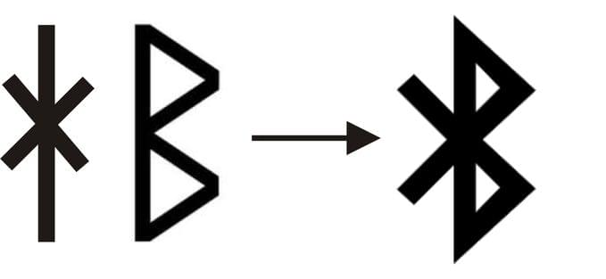
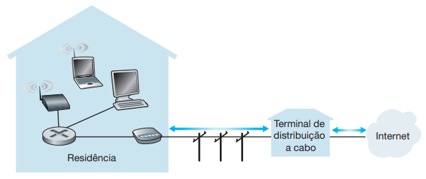
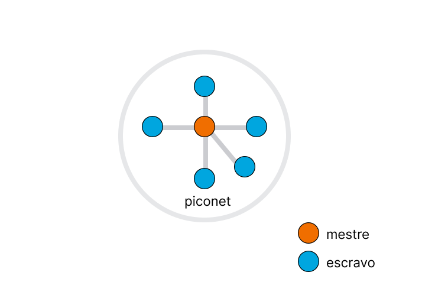
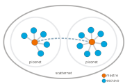
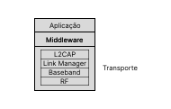
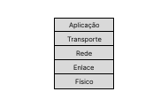
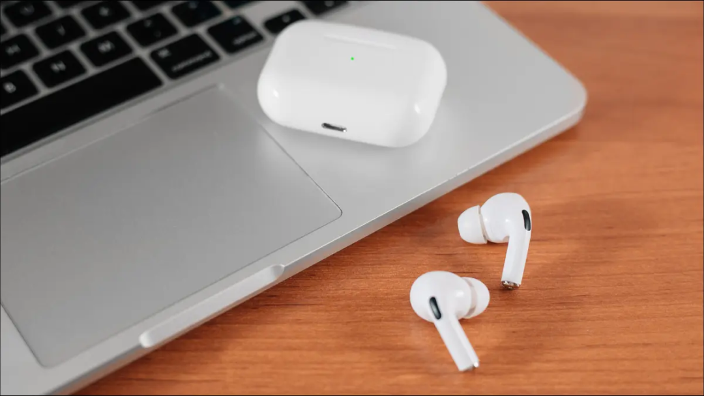
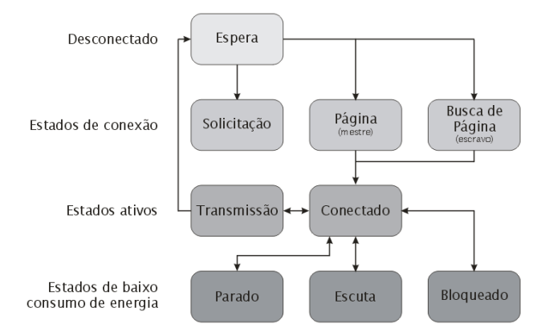

Introdução
- Conectividade sem fio: O Bluetooth permite que dispositivos se conectem e se comuniquem sem fio, facilitando a transferência de dados, áudio, vídeo e outros tipos de informações entre eles.
- Interoperabilidade:O Bluetooth busca garantir que dispositivos de diferentes fabricantes possam se conectar e se comunicar uns com os outros. Isso é possível devido aos padrões e especificações estabelecidos pelo Bluetooth Special Interest Group (SIG), que promovem a compatibilidade e a interoperabilidade entre os dispositivos Bluetooth certificados.
- Baixo consumo de energia (mais barata):O Bluetooth tem sido desenvolvido com foco em eficiência energética, permitindo a comunicação sem fio entre dispositivos com um consumo de energia relativamente baixo. Isso é especialmente importante para dispositivos portáteis e de baixa potência, como fones de ouvido sem fio, smartwatches e dispositivos IoT.
- Os dispositivos Bluetooth enviam sinais para descobrir outros dispositivos nas proximidades. Uma vez que um dispositivo encontra outro dispositivo com o qual deseja se conectar, inicia-se o processo de pareamento.
- Durante o pareamento, os dispositivos trocam informações iniciais de identificação para iniciar o estabelecimento de conexão.
- Durante o estabelecimento de conexão, os dispositivos trocam informações e decidem como irão se comunicar, isto é, definirem informações fundamentais sobre a topologia da rede e o tipo de link que estabelecerão.
- Após essa breve troca de informações, os dispositivos estabelecem uma conexão para formar uma rede. A rede formada pelos dispositivos Bluetooth conectados é chamada de "piconet".
- Uma vez estabelecida a conexão, os dispositivos iniciam o salto de frequência para permanecerem continuamente conectados e evitar interferências.
- Por fim, podemos levar um dispositivo a uma distância razoável do outro que a conexão continuará funcionando, desde que não se afaste muito.
História do Bluetooth
O Bluetooth não surgiu antes de qualquer forma de conexão sem fio. Houve outras tecnologias de comunicação sem fio desenvolvidas anteriormente, como o infravermelho (IR) e a rádio frequência (RF), que permitiam a transferência de dados entre dispositivos.
O infravermelho foi amplamente utilizado para comunicação sem fio em dispositivos como controles remotos de televisão, transmissores de dados de curto alcance e dispositivos de comunicação entre computadores pessoais. No entanto, o alcance do infravermelho era limitado e exigia linha de visão direta entre os dispositivos.
O Bluetooth foi desenvolvido posteriormente para abordar algumas das limitações e desafios das tecnologias de comunicação sem fio existentes. Ele foi projetado para fornecer uma forma mais conveniente de conexão sem fio de curto alcance, com foco em baixo consumo de energia, simplicidade de uso e interoperabilidade entre dispositivos de diferentes fabricantes.
Bluetooth e PAN
Bluetooth é uma especificação industrial para Personal Area Networks (PANs), também conhecido como IEEE 802.15.1. Essa é uma rede de comunicação que conecta dispositivos próximos entre si, geralmente dentro de uma área limitada, como o alcance pessoal de um indivíduo, ela foi projetada para permitir a interconexão de dispositivos pessoais.
Bluetooth provê uma forma de conectar e trocar informações entre dispositivos como smartphones, fones sem fio, laptops, PCs, impressoras, câmeras digitais dentre outros, através de frequências de rádio de curto alcance, segura e de baixo custo.
Especificação: alcance e transmissão
A especificação Bluetooth foi inicialmente projetada com o objetivo de desenvolver dispositivos interconectáveis de baixo consumo de energia, através de frequências de rádio de curto alcance – de 1 a 100 metros, dependendo da categoria do dispositivo. Ou seja, se estiverem um ao alcance do outro, dois dispositivos que implementam a especificação Bluetooth podem se comunicar, mesmo se não estiverem na mesma sala, mas, respeitando uma distância máxima de até 100 metros.
Até quantos dados o Bluetooth pode transmitir? Isso depende de requisitos como quantidade de energia necessária na transmissão, taxa de transferência e distância.
Escolha do nome
A história contada para a escolha do nome é que um m dos engenheiros da equipe que desenvolvia o Bluetooth estava lendo um livro histórico sobre Vikings e isso inspirou a ideia do nome “Bluetooth”: uma homenagem ao rei da Dinamarca e Noruega, Harald Blåtand, que na língua inglesa é chamado de Harold Bluetooth. O nome do rei foi escolhido pelo fato dele ter unificado as tribos de seu país, semelhantemente ao que a tecnologia pretende fazer: unificar tecnologias diferentes, garantindo interoperabilidade entre diferentes dispositivos.
Já o logotipo do Bluetooth é a união das runas nórdicas Hagall e Berkanan, correspondentes às letras H e B do nosso alfabeto (uma referência ao nome do rei Harald Blåtand). As runas nórdicas são um sistema de escrita antigo utilizado pelos povos germânicos do norte da Europa durante a Era Viking, composto por caracteres alfabéticos.
Além disso, "Blåtand" é uma palavra em dinamarquês que pode ser traduzida literalmente como "dente azul". Na época em que Harald Blåtand viveu, ele era conhecido por ter um dente que parecia ter uma tonalidade azulada, e esse detalhe físico acabou se tornando parte de sua identidade histórica.
Bluetooth SIG, o que é?
O projeto da especificação Bluetooth começou quando a empresa de celulares Ericsson se juntou a outras empresas como Intel Corporation, International Business Machines Corporation (IBM), Nokia Corporation e Toshiba Corporation para formarem o Bluetooth Special Interest Group (SIG) em 1998. Em 1999 outras empresas se juntaram ao SIG como 3Com Corporation, Lucent/Agere Technologies Inc., Microsoft Corporation e Motorola Inc. O trabalho conjunto de todos os membros do SIG permitiu o desenvolvimento da especificação Bluetooth, através de padrões abertos para assegurar uma rápida aceitação e compatibilidade com as tecnologias disponíveis no mercado.
Além disso, é o grupo responsável por atualizar e lançar novas versões do Bluetooth, além de certificar os produtos que atendem aos requisitos estabelecidos. O programa de certificação tem como objetivo garantir que os novos produtos lançados foram testados e estão de acordo com os requisitos estabelecidos pelo Bluetooth SIG, além de garantir que os produtos sejam compatíveis e capazes de se conectar e comunicar corretamente com outros dispositivos Bluetooth. Por fim, após passar por esse programa de certificação, os produtos podem exibir o logotipo do Bluetooth e são reconheciddos como dispositivos confiáveis e interoperáveis.
Objetivos
A tecnologia surgiu com o objetivo de resolver alguns principais problemas:
Enquanto a tecnologia tinha como objetivo resolver esses problemas, como já comentado, a SIG tinha como principal objetivo estabelecer os padrões técnicos e especificações para garantir a interoperabilidade e compatibilidade entre dispositivos de diferentes fabricantes. Nesse contexto, o Bluetooth ganhou popularidade, se tornando um dos principais métodos de conexão entre dispositivos da atualidade. Basicamente, inicialmente, a ideia era apenas eliminar a necessidade de cabos para estabelecer comunicação entre dispositivos. Contudo, com o andamento do projeto, ficou claro que as aplicações de uma tecnologia desse tipo eram ilimitadas.
Como funciona? Resumidamente
Funciona de forma parecida com o Wi-Fi. Ele usa ondas de rádio para enviar dados entre dispositivos em distâncias curtas. Agora, enquanto o Wi-Fi usa ondas de rádio para transmitir dados entre o roteador e o dispositivo, o Bluetooth faz isso entre os dispositivos. Então, basicamente, se dois aparelhos têm uma opção de Bluetooth, elas podem transmitir dados entre si.
Agora, embora o Bluetooth ainda funcione na frequência de 2,4 GH, assim como o Wi-Fi, ele funciona principalmente em distâncias mais curtas e usa sinais muito mais fracos - apenas 1 milliwatt de potência. Por exemplo, um pequeno laser produz 5 milliwatt de potência. Isso garante uma melhor eficiência energética e por isso se torna uma opção mais econômica.
Além disso, o Bluetooth pode conectar 8 dispositivos ao mesmo tempo a um mesmo dispositivo sem nenhuma interferência entre essas conexões. Por exemplo, podemos conectar a um mesmo laptop um mouse, um teclado e um fone sem fio ao mesmo tempo sem que haja interferência entre essas conexões. E também não terá nenhuma interferência de outros dispositivos conectados utilizando outras formas de comunicação sem fio como portas de garagem ou babás eletrônicas que também utilizam a mesma faixa de frequência em torno de 2,4 GHz. Enquanto que, utilizando a tecnologia de Wi-Fi, teríamos problemas com interferências.
Isso ocorre porque o Bluetooth opera em uma faixa de frequência central em torno de 2,4 GHz para suas transmissões, que é compartilhada por outros dispositivos sem fio, como Wi-Fi, telefones sem fio e micro-ondas. Entretanto, para evitar interferências com esses dispositivos, o Bluetooth utiliza uma técnica chamada "saltos adaptativos em frequência". Basicamente, o Bluetooth consegue encontrar frequências menos congestionadas para transmitir seus dados, reduzindo as interferências e melhorando a qualidade da conexão, explicaremos esse mecanismo nas próximas seções.
A conexão entre dois dispositivos Bluetooth ocorre da seguinte maneira de forma mais geral e resumida:
Topologia
O que é topologia de uma rede?
A topologia de rede refere-se à forma como os dispositivos em uma rede estão fisicamente ou logicamente interconectados e organizados, isto é, ela define a estrutura básica da rede e como os dispositivos se comunicam entre si.
Por exemplo, a topologia da rede da Internet é extremamente complexa e abrange uma combinação de várias topologias diferentes, devido à sua natureza distribuída e global, a Internet não possui uma topologia única e definida. Entretanto, analisando uma parcela da Internet podemos identificar uma topologia: por exemplo, a topologia em estrela é frequentemente encontrada em redes locais (LANs), onde todos os dispositivos da rede são conectados a um ponto central, como um roteador de acesso, por meio de cabos individuais ou de Wi-Fi, e é esse ponto de acesso que vai os conectar com o resto da Internet.
Topologia Bluetooth
Já a topologia de uma rede Bluetooth, pode assumir a topologia em estrela, como as redes locais da Internet ou uma topologia em malha parcial.
Topologia em estrela - piconet
Uma topologia em estrela é estabelecida quando o dispositivo mestre se conecta diretamente a dispositivos escravos individuais, onde cada dispositivo escravo se comunica apenas com o dispositivo mestre e não com os outros dispositivos escravos. Esse tipo de comunicação é chamado de piconet. Cada piconet é um conjunto de até oito dispositivos Bluetooth e um dispositivo é designado como mestre e os outros como escravos..
Como explicado, durante uma operação típica, um canal físico de rádio é compartilhado por um grupo de dispositivos que estão sincronizados a um clock comum (mesma frequência) e a um mesmo padrão de saltos de frequência, isto é, seguem uma sequência coordenada de mudanças de frequência durante a transmissão. Um dispositivo que provê a sincronização de referência da frequência é chamado de mestre e todos os outros são chamados de escravos.
Além da comunicação dentro de uma mesma piconet utilizar um padrão de saltos de frequência, explicada anteriormente, o canal físico é subdividido em unidades de tempos denominados slots. Dados são transmitidos entre dispositivos Bluetooth em pacotes que são posicionados nestes slots. Por exemplo, um pacote geralmente é dividido em vários slots.
Em uma piconet, o mestre transmite em slots de tempo pares enquanto que os escravos transmitem apenas em slots de tempo ímpares. Em cada slot de tempo, devido ao mecanismo frequency hopping, um canal de frequência diferente é utilizado, ou seja, após cada envio ou recebimento de pacotes, o canal é trocado, antes mesmo da transmissão do próximo pacote.
Por fim, a comunicação entre o mestre e os escravos é assimétrica. O escravo só pode transmitir dados para o mestre quando é solicitado pelo mestre. Quando um escravo tem dados para transmitir, ele deve aguardar por um convite do mestre para realizar a transmissão. O mestre reserva slots de tempo para os escravos transmitirem seus dados, garantindo que a comunicação ocorra de maneira ordenada e sem colisões.
Possibilidade Bluetooth scatternet
Porém, a tecnologia também permite a formação de uma topologia em malha parcial, onde duas ou mais piconets podem se conectar através de um dispositivo Bluetooth comum a ambas. Isso acontece quando uma rede piconet é formada, onde um dispositivo mestre se conecta a vários dispositivos escravos, porém, alguns desses dispositivos escravos podem, por sua vez, atuar como mestres para se conectar a outros dispositivos escravos, formando outras redes piconets.
Dessa forma, essa configuração permite que os dispositivos se comuniquem mesmo que não estejam diretamente ao alcance uns dos outros. Isso porque a comunicação pode ser “roteada” através de dispositivos intermediários que são comuns a mais de uma piconet, atuando como se fossem “pontes” entre as redes piconet. Essa configuração é chamada de scatternet.
Implementações atuais de dispositivos Bluetooth baseiam-se basicamente em conexões ponto-a-ponto. Entretanto, a especificação Bluetooth não define apenas soluções ponto-a-ponto como também topologias mais complexas. O objetivo é a formação de scatternets que forneçam comunicação efetiva e eficiente através de vários de nós com tempo de resposta aceitável e baixo consumo de energia para o desenvolvimento de aplicações fim-a-fim.
Por exemplo, em ambientes de automação residencial, diferentes dispositivos Bluetooth, como lâmpadas, termostatos, alto-falantes, câmeras de segurança, poderiam formar uma scatternet para se comunicar entre si e com um hub central. Entretanto, pesquisamos por exemplos de aplicação, mas realmente não existem exemplos de comunicação scatternet com Bluetooth famosos e práticos, porém é uma possibilidade de utilização.
Protocolos e componentes
Protocolo é um conjunto de regras e procedimentos que definem a comunicação entre uma ou mais entidades. Eles definem ações tomadas ao transmitir / receber mensagens, ações tomadas caso eventos externos ocorram durante essa transmissão e o formato / ordem das mensagens trocadas.
Nesse contexto, a arquitetura ou estrutura de uma rede é projetada da seguinte forma: os projetistas definem camadas, nessas camadas, diferentes protocolos podem pertencer a cada uma delas. Por fim, para cada protocolo, temos diferentes hardwares / softwares de rede que podem executá-los.
Arquitetura
- Rádio frequência (RF): a especificação da camada de rádio corresponde essencialmente ao projeto dos tranceivers Bluetooth. Contém um sintetizador de rádio frequência, filtros Gaussianos, recuperação de clock e detector de dados.
- Baseband: esta camada define como dispositivos Bluetooth localizam e se conectam a outros dispositivos. Define os papéis de mestre e escravo, padrões de saltos de frequência e tipos de pacotes. Suporta links Synchronous Connection-Oriented (SCO) e Assynchronous Connection-Less (ACL).
- Link Manager: é responsável por implementar o Link Manager Protocol (LMP) no Bluetooth. Avalia as características do meio de transmissão, realiza autenticação, criptografia e controle de energia.
- Logical Link Control and Adaptation (L2CAP): serve de interface entre os protocolos de camadas superiores e os protocolos de transporte de camadas inferiores. Responsável pela fragmentação e remontagem de pacotes.
Para o Bluetooth não é diferente, sua arquitetura consiste basicamente de dois componentes: um transceiver (hardware) e uma pilha de protocolos. Esta arquitetura oferece serviços e funcionalidades básicas que tornam possível a conexão de dispositivos e a troca de uma variedade de tipos de dados entre estes dispositivos.
Basicamente, o meio físico utilizado na transmissão de dados é uma faixa de rádio não licenciada destinada a para comunicações sem fio em dispositivos industriais, científicos e médicos.
Isso significa que, em muitos países, as faixas de frequência de rádio são regulamentadas pelo governo, e algumas faixas específicas requerem uma licença do órgão regulador para serem utilizadas. Isso ocorre para garantir o uso organizado e documentado do espectro de frequência e evitar interferências prejudiciais entre diferentes usuários. No entanto, existem algumas faixas de frequência que são designadas como "não licenciadas" ou "livres", o que significa que os usuários não precisam obter uma licença específica do governo para operar dispositivos de rádio nessas faixas. Nesse sentido, o Bluetooth utiliza uma dessas faixas “livres” para a comunicação.
Essa faixa varia entre 2.4 GHz e 2.485GHz. Como já explicado anteriormente, o sistema emprega um mecanismo denominado frequency hopping, que “salta” constantemente de frequência para combater interferência e enfraquecimento do sinal. A cada segundo são realizados 1600 saltos de frequência.
A pilha de protocolos do Bluetooth segue o exemplo abaixo:
Explicação das camadas
Observando a pilha de protocolos do Bluetooth, já conseguimos enxergar algumas diferenças em relação a pilha de protocolos da Internet. Basicamente, a pilha de protocolos da Inernet segue o modelo OSI ou a arquitetura de 5 camadas (exibida da imagem abaixo). Apesar dessas arquiteturas representarem modelos de referência amplamente utilizados, nem todas as arquiteturas e protocolos de rede seguem esses modelos. Dessa forma, o Bluetooth é um exemplo de uma tecnologia de rede que possui sua própria arquitetura e modelo de camadas, que é diferente desses modelos.
Fazendo um paralelo com a Internet que temos grande simplificação da pilha de protocolos da Internet quando comparada com a pilha de protocolos do Bluetooth, pois há diferenças significativas em relação ao número de protocolos, camadas e hardwares envolvidos na transmissão.
Neste contexto, protocolos de transporte não se equivalem aos protocolos da camada de transporte do modelo OSI. Ao invés disso, estes protocolos correspondem às camadas físicas e de enlace do modelo OSI.
Camada de transporte: composta por 4 subcamadas com funções específicas e que implementam apenas um protocolo em cada uma delas. São elas: rádio frequência (RF), Baseband, Link Manager, Logical Link Control and Adaptation (L2CAP). Estes protocolos ou subcamadas suportam tanto comunicação síncrona quanto assíncrona e todos estes são indispensáveis para a comunicação entre dispositivos Bluetooth.
Como os protocolos mencionados nesta camada são únicos e têm funções específicas, elas também podem ser conhecidas como “subcamadas” da camada de transporte com um protocolo. Com as explicações a seguir isso ficará mais claro.
Camada de middleware: inclui protocolos de terceiros e padrões industriais que permitem a integração dos dispositivos Bluetooth com outros sistemas e redes. Protocolos de padrões industriais incluem Point-to-Point Protocol (PPP), Internet Protocol (IP), Transmission Control Protocol (TCP), Wireless Application Protocol (WAP), etc.
Camada de aplicação: consiste das próprias aplicações que utilizam links Bluetooth. Pode incluir aplicações legadas ou aplicações orientadas a Bluetooth.
Exemplo prático pela arquitetura
Camada de aplicação: No laptop, a aplicação do YouTube é iniciada para reproduzir a música. Fazendo assim, uma requisição para servidores do site para obter os dados através de um navegador Web.
Camada de middleware: Os dados de áudio de um servidor do YouTube são encapsulados em protocolos de terceiros e padrões industriais, como o HTTP (Hypertext Transfer Protocol), Transmission Control Protocol (TCP) e o Internet Protocol (IP), e enviados para a aplicação no laptop. Podemos perceber que é graças a esses protocolos que a aplicação se comunica com dispositivos externos, como o fone de ouvido Bluetooth.
Camada de transporte (laptop): Quando a aplicação que é executada em um dos dispositivos Bluetooth recebe os dados da camada middleware, os pacotes de dados são fragmentados em pacotes menores para a transmissão. Isso garante que os dados possam ser transmitidos de forma eficiente e confiável através da conexão Bluetooth.
Os protocolos presentes nas subcamadas inferiores suportarão uma comunicação síncrona com os fones de ouvido, através das configurações definidas e pela conversão para sinais de radiofrequência.
Camada de transporte (fones de ouvido): Quando o fone de ouvido recebe os sinais através de sinais de rádiofrequência, os sinais serão convertidos e os pacotes serão remontados para que os fones de ouvido possam reproduzir o áudio da música.
Processo de Comunicação
- Espera: quando está ligado, mas ainda não se juntou a uma piconet;
- Solicitação: quando envia requisições de busca de outros dispositivos com os quais possa se conectar;
- Página: quando um dispositivo mestre de uma piconet existente envia mensagens à procura de dispositivos que possam se juntar à sua piconet;
- Conectado: quando uma comunicação é bem-sucedida entre o mestre e um novo dispositivo, que assume o papel de escravo e recebe um endereço que o identifica na piconet;
- Transmissão: quando um escravo conectado está transmitindo dados, sob permissão do mestre. Após a transmissão, o escravo retorna ao estado de conectado;
- Bloqueado: estado de baixo consumo de energia, onde o escravo não está ativo por um período pré-determinado de tempo, sem transferência de dados;
- Escuta: estado de baixo consumo de energia em que o escravo "dorme" por um número pré-definido de slots, acordando apenas para a transmissão de dados em seu slot de tempo designado;
- Estacionado: quando o dispositivo mestre instrui um escravo a entrar neste estado quando não há dados a serem enviados ou recebidos. O escravo perde seu endereço atual na piconet, que será dado a outro escravo que está sendo retirado do estado de estacionado.
Pacote do Bluetooth
A transmissão de dados é feita através de slots de tempos. Um único slot possui 625 microssegundos de comprimento, representando um pacote de dados que ocupa um único slot.
O código de acesso contém o endereço da piconet (para filtrar mensagens de outra piconet) e possui geralmente 72 bits de comprimento. O cabeçalho possui 18 bits e inclui o endereço de um dispositivo escravo ativo na rede Bluetooth. O campo payload é onde trafega os dados da aplicação, pode conter de 0 a 2745 bits de dados.
Como funciona o processo de comunicação?
O processo de comunicação do Bluetooth ocorre da seguinte forma. Basicamente, um dispositivo Bluetooth pode estar nos seguintes estados:
Mecanismos contra a interferência
FHSS
O Espalhamento Espectral por Salto de Frequência (Frequency Hopping Spread Spectrum - FHSS) é uma técnica muito
importante amplamente utilizada pelo Bluetooth para mitigar os efeitos de interferências externas.
O funcionamento do FHSS se baseia em realizar saltos rápidos e sequenciais entre múltiplas frequências com um padrão
pré-definido. Dessa forma, as chances de haver interferência durante a comunicação se torna mínima, pois a frequência
de transmissão é alterada em períodos curtos de tempo, diminuindo em muito a probabilidade de duas comunicações
Bluetooth fisicamente próximas utilizarem a mesma faixa de frequência .
A escolha das frequências é feita de forma
pseudo-aleatória e
essa sequência é repassada apenas para transmissor e receptor, o que oferece uma camada extra de proteção no uso do
Bluetooth, pois
apenas os dois integrantes da comunicação sabem quais frequências devem ouvir a cada período de tempo.
FEC:
O Forward Error Correction (FEC) é um algoritmo utilizado no contexto do Bluetooth para detecção e correção de erros
durante a transmissão de dados. Esse algoritmo adiciona bits de redundância aos dados antes de enviá-los, permitindo
ao receptor reconstruir os dados originais mesmo que ocorram erros na transmissão.
O FEC utiliza técnicas matemáticas para calcular os bits de redundância, que são adicionados aos dados transmitidos.
Esses bits extras contêm informações que ajudam o receptor a identificar e corrigir os erros. Dessa forma, se ocorrer
uma interferência ou perda de dados durante a transmissão, o receptor pode utilizar as informações redundantes para
recuperar os dados originais.
Uma das vantagens do FEC é a capacidade de corrigir erros sem a necessidade de retransmissão dos dados. Isso é
especialmente útil em casos em que a retransmissão não é viável devido a restrições de tempo ou largura de banda. O
FEC oferece uma solução eficiente para lidar com erros de transmissão e melhorar a confiabilidade da comunicação
Bluetooth.
ARQ:
O Automatic Repeat Request (ARQ) é um mecanismo utilizado no Bluetooth para detectar erros de transmissão e solicitar
a retransmissão dos dados. Quando ocorre um erro na transmissão, o receptor envia uma solicitação ao transmissor para
que os dados sejam reenviados.
O ARQ funciona de forma semelhante a um sistema de confirmação e retransmissão. Após receber os dados, o receptor
verifica a integridade dos mesmos. Se forem detectados erros, o receptor envia um sinal de controle ao transmissor,
indicando que ocorreu um erro e solicitando a retransmissão dos dados.
Existem diferentes variantes do ARQ, como o ARQ de repetição seletiva e o ARQ de solicitação de repetição. Cada
variante possui suas próprias características e estratégias para lidar com erros de transmissão.
O ARQ desempenha um papel importante na comunicação Bluetooth, pois ajuda a garantir que os dados sejam transmitidos
de forma confiável. Quando combinado com outros mecanismos de detecção e correção de erros, como o FEC, o ARQ
contribui para a melhoria da qualidade e confiabilidade das conexões Bluetooth.
Perfis Bluetooth
- Advanced Audio Distribution Profile (A2DP): Permite a transmissão de áudio de alta qualidade de um dispositivo para outro, como streaming de música de um smartphone para um fone de ouvido sem fio.
- Audio/Video Remote Control Profile (AVRCP): Permite o controle remoto de dispositivos de áudio e vídeo, como ajustar o volume ou reproduzir/pausar uma música em um alto-falante Bluetooth usando o smartphone.
- Generic Audio/Video Distribution Profile (GAVDP): Define como os dispositivos se comunicam para distribuir fluxos de áudio e vídeo de alta qualidade, sendo usado em aplicações de streaming de mídia.
- Serial Port Profile (SPP): Permite a emulação de uma porta serial entre dois dispositivos Bluetooth, permitindo a comunicação de dados seriados, como transferência de arquivos ou controle de dispositivos seriais.
- Dial-up Networking Profile (DUN): Permite o uso do Bluetooth para conectar dispositivos a redes de telefonia discada, como discagem para acesso à internet por meio de um telefone celular.
- Personal Area Networking Profile (PAN): Permite a criação de uma rede pessoal usando Bluetooth, permitindo o compartilhamento de conexões à internet, arquivos e outros recursos entre dispositivos.
- Hands-Free Profile (HFP): Especifica a comunicação entre dispositivos móveis e dispositivos mãos-livres, como kits veiculares Bluetooth, permitindo fazer e receber chamadas sem usar as mãos.
- Headset Profile (HSP): Permite a conexão de fones de ouvido e headsets Bluetooth a dispositivos para comunicação de áudio, como chamadas telefônicas.
- Phone Book Access Profile (PBAP, PBA): Permite o acesso e a transferência de dados de agenda telefônica entre dispositivos, como sincronização de contatos de um smartphone para um sistema de navegação veicular.
- Object Push Profile (OPP): Permite a transferência de arquivos, como imagens, vídeos e contatos, entre dispositivos Bluetooth. É amplamente utilizado para compartilhar arquivos entre smartphones, tablets e outros dispositivos compatíveis.
- Basic Printing Profile (BPP): Especifica a comunicação entre dispositivos Bluetooth para impressão de documentos. Permite enviar documentos para impressoras Bluetooth sem a necessidade de fios ou configurações complexas.
- Message Access Profile (MAP): Permite o acesso a mensagens de texto (SMS) e e-mails em dispositivos Bluetooth. É comumente utilizado em dispositivos veiculares para exibição de mensagens e notificações durante a condução.
Os perfis Bluetooth são especificações que definem como os dispositivos se comunicam e interagem uns com os outros em uma rede Bluetooth. Existem diversos tipos de perfis Bluetooth, cada um com sua função específica. Existem dezenas de perfis bluetooth, mas é possível discorrer sobre os principais separados por categoria:
Perfis de Áudio e Vídeo:
Perfis de Conexão de Dados:
Perfis de Controle e Acessibilidade:
Perfis de Troca de Arquivos:
Segurança no Bluetooth
Desafios de segurança
- BIAS (Bluetooth Impersonation Attacks): O BIAS é uma forma de ataque em que um invasor se passa por um dispositivo legítimo para estabelecer uma conexão com outro dispositivo Bluetooth. Isso pode levar a atividades maliciosas, como interceptação de comunicações, injeção de pacotes falsos e até mesmo assumir o controle do dispositivo alvo. O BIAS explora vulnerabilidades nas especificações do Bluetooth e pode permitir que um invasor comprometa a segurança de dispositivos Bluetooth vulneráveis.
- Roubo de dados e espionagem: A comunicação sem fio do Bluetooth pode ser interceptada por um invasor, permitindo o acesso não autorizado a dados confidenciais. Isso pode incluir informações pessoais, senhas, mensagens de texto, chamadas telefônicas e outros dados sensíveis transmitidos entre dispositivos Bluetooth. Os invasores podem usar técnicas de interceptação de pacotes para capturar e analisar o tráfego Bluetooth, comprometendo a privacidade das informações.
- Bluebugging: O Bluebugging é um tipo de ataque em que um invasor ganha acesso total a um dispositivo Bluetooth comprometido, permitindo a realização de várias ações maliciosas. Isso inclui fazer chamadas telefônicas, enviar mensagens de texto, acessar agendas de contatos, ouvir chamadas em andamento e executar comandos no dispositivo alvo, tudo sem o conhecimento do usuário. Esse tipo de ataque requer que o dispositivo alvo tenha uma vulnerabilidade específica.
- Bluesnarfing: O Bluesnarfing é uma técnica usada para acessar informações confidenciais, como contatos, mensagens de texto, e-mails e arquivos armazenados em um dispositivo Bluetooth, sem o consentimento do usuário. Os invasores exploram vulnerabilidades de segurança para obter acesso não autorizado aos dados armazenados no dispositivo alvo.
- Rastreamento de dispositivos: O Bluetooth emite sinais que podem ser usados para rastrear a localização de dispositivos Bluetooth. Embora essa capacidade possa ter aplicações legítimas, como encontrar itens perdidos, também pode ser explorada por invasores para rastrear a localização de um dispositivo ou de uma pessoa sem o seu conhecimento ou consentimento.
Mecanismos de segurança do Bluetooth
- Autenticação: O Bluetooth suporta autenticação para verificar a identidade dos dispositivos envolvidos em uma conexão. Isso é realizado por meio de um processo de emparelhamento, no qual os dispositivos trocam chaves de segurança para estabelecer uma conexão confiável. Isso impede que dispositivos não autorizados se conectem e interajam com outros dispositivos Bluetooth.
- Criptografia: O Bluetooth utiliza algoritmos de criptografia para proteger os dados transmitidos entre dispositivos. A criptografia garante que as informações sejam embaralhadas de forma segura durante a transmissão, tornando-as ininteligíveis para qualquer pessoa não autorizada que tente interceptá-las. O Bluetooth oferece diferentes níveis de criptografia, incluindo o uso de chaves de criptografia de 128 bits ou 256 bits.
- Controle de Acesso ao Meio (MAC): O Bluetooth implementa um esquema de controle de acesso ao meio para evitar interferências e garantir que apenas os dispositivos autorizados possam transmitir dados. O Bluetooth utiliza técnicas de espalhamento espectral e saltos de frequência para dividir o espectro de rádio em canais e evitar colisões de dados entre dispositivos.
- Modos de segurança: O Bluetooth possui diferentes modos de segurança que podem ser aplicados com base nas necessidades específicas de um determinado cenário. Isso inclui modos como Modo Seguro (Secure Mode), que exige autenticação e criptografia, Modo de Apenas Autenticação (Authentication Only Mode), que requer apenas autenticação sem criptografia, e Modo de Apenas Autorização (Authorization Only Mode), que permite a conexão sem autenticação, mas requer autorização explícita.
- Atualizações de segurança: À medida que novas vulnerabilidades são descobertas, os fabricantes e desenvolvedores de Bluetooth lançam atualizações de segurança para corrigir essas vulnerabilidades. É essencial manter os dispositivos Bluetooth atualizados com as últimas atualizações de segurança para garantir a proteção contra ameaças conhecidas.
Aplicações do Bluetooth
Dispositivos móveis e acessórios
- Teclados e mouses sem fio: O Bluetooth também é amplamente utilizado em teclados e mouses sem fio, proporcionando uma experiência de digitação e navegação mais conveniente para dispositivos móveis. Esses acessórios permitem que os usuários digitem com facilidade em tablets e smartphones, além de controlarem o cursor do mouse sem fio.
- Smartwatches e dispositivos vestíveis: O Bluetooth desempenha um papel fundamental na conectividade entre smartphones e smartwatches, permitindo a sincronização de dados, notificações e recursos adicionais. Além disso, dispositivos vestíveis, como pulseiras fitness e rastreadores de atividades, também utilizam o Bluetooth para se conectar a dispositivos móveis e compartilhar informações de saúde e condicionamento físico.
- Transferência de arquivos: O Bluetooth é amplamente usado para transferir arquivos entre dispositivos móveis, como smartphones e tablets. Com a funcionalidade de transferência de arquivos Bluetooth, os usuários podem enviar fotos, vídeos, documentos e outros arquivos de forma rápida e fácil, sem a necessidade de cabos ou conexões de rede.
- Controle remoto: O Bluetooth também é usado para controlar remotamente dispositivos móveis e outros dispositivos eletrônicos. Por exemplo, é possível usar o smartphone como controle remoto para a reprodução de mídia em um sistema de som/TV ou para controlar a reprodução de apresentações em um computador.
O Bluetooth é extensivamente aproveitado em dispositivos móveis e acessórios devido à sua conveniência, versatilidade e capacidade de comunicação sem fio de curto alcance. Ele desempenha um papel essencial em várias aplicações envolvendo dispositivos móveis, fornecendo conectividade e funcionalidade adicional. É possível apresentar algumas das principais aplicações do Bluetooth em dispositivos móveis e acessórios:
Áudio e entretenimento
- Fones de ouvido e alto-falantes sem fio: O Bluetooth é amplamente utilizado para conectar fones de ouvido e alto-falantes sem fio a dispositivos como smartphones, tablets, laptops e TVs. Isso permite que os usuários desfrutem de música, podcasts, filmes e jogos sem a necessidade de fios, proporcionando maior liberdade de movimento e comodidade.
- Sistemas de som domésticos: O Bluetooth é comumente usado em sistemas de som domésticos, como soundbars e caixas de som estéreo, permitindo que os usuários transmitam áudio de seus dispositivos móveis para esses sistemas de som sem necessidade de fios.
- Conectividade com carros: Muitos veículos modernos estão equipados com conectividade Bluetooth, permitindo que os motoristas façam chamadas telefônicas com viva-voz e transmitam música diretamente de seus dispositivos móveis para os sistemas de som do carro. Além disso, o Bluetooth também pode ser usado para controlar certas funções do veículo, como o sistema de entretenimento e navegação.
- Controle remoto de dispositivos de áudio: O Bluetooth também é usado para controlar dispositivos de áudio remotamente. Por exemplo, é possível usar um smartphone como controle remoto para ajustar o volume, alterar faixas de áudio ou ajustar as configurações de equalização em um sistema de som ou em um alto-falante inteligente.
- Realidade virtual (VR) e realidade aumentada (AR): O Bluetooth é amplamente utilizado em dispositivos de realidade virtual e aumentada para transmitir áudio de alta qualidade. Fones de ouvido de realidade virtual e óculos de AR geralmente são equipados com conectividade Bluetooth para permitir a reprodução de áudio imersivo durante experiências virtuais e aumentadas.
O Bluetooth desempenha um papel significativo em aplicações de áudio e entretenimento, proporcionando conectividade sem fio e melhorando a experiência do usuário em várias situações. Aqui estão algumas das principais aplicações do Bluetooth nesse contexto:
Automação residencial e Internet das Coisas (IoT)
- Controle de iluminação: O Bluetooth permite o controle de iluminação sem fio em residências inteligentes. Os usuários podem ajustar a intensidade da luz, criar ambientes personalizados e programar cenários de iluminação usando dispositivos móveis ou assistentes de voz.
- Controle de temperatura: Termostatos Bluetooth permitem que os usuários controlem o aquecimento, resfriamento e programem a temperatura em suas residências remotamente. Isso ajuda na eficiência energética e no conforto do ambiente.
- Sistemas de segurança: O Bluetooth é utilizado em sistemas de segurança residencial para conectar câmeras, sensores de movimento e alarmes a um hub central. Isso permite monitoramento em tempo real e controle remoto da segurança residencial.
- Fechaduras inteligentes: As fechaduras Bluetooth oferecem conveniência e segurança, permitindo que os usuários desbloqueiem portas usando seus smartphones ou outros dispositivos autorizados, eliminando a necessidade de chaves físicas.
Saúde e dispositivos médicos
- Monitoramento de saúde: Dispositivos de monitoramento de saúde, como monitores de frequência cardíaca, medidores de glicose no sangue e medidores de pressão arterial, utilizam o Bluetooth para transmitir dados para dispositivos móveis ou sistemas de monitoramento.
- Dispositivos vestíveis (wearables): Pulseiras fitness, smartwatches e outros dispositivos vestíveis usam o Bluetooth para coletar e transmitir dados de saúde, como atividade física, sono e ritmo cardíaco, para aplicativos de monitoramento em dispositivos móveis.
- Telemedicina: O Bluetooth permite a comunicação entre dispositivos médicos e profissionais de saúde em consultas remotas. Isso possibilita o monitoramento remoto de pacientes, permitindo diagnósticos mais rápidos e tratamentos mais eficientes.
- Administração de medicamentos: Dispositivos de administração de medicamentos, como bombas de insulina e dispositivos de inalação, podem ser conectados por Bluetooth a aplicativos móveis que ajudam os pacientes a monitorar e controlar suas doses.
Outras aplicações emergentes
- Monitoramento de saúde: Dispositivos de monitoramento de saúde, como monitores de frequência cardíaca, medidores de glicose no sangue e medidores de pressão arterial, utilizam o Bluetooth para transmitir dados para dispositivos móveis ou sistemas de monitoramento.
- Dispositivos vestíveis (wearables): Pulseiras fitness, smartwatches e outros dispositivos vestíveis usam o Bluetooth para coletar e transmitir dados de saúde, como atividade física, sono e ritmo cardíaco, para aplicativos de monitoramento em dispositivos móveis.
- Telemedicina: O Bluetooth permite a comunicação entre dispositivos médicos e profissionais de saúde em consultas remotas. Isso possibilita o monitoramento remoto de pacientes, permitindo diagnósticos mais rápidos e tratamentos mais eficientes.
- Administração de medicamentos: Dispositivos de administração de medicamentos, como bombas de insulina e dispositivos de inalação, podem ser conectados por Bluetooth a aplicativos móveis que ajudam os pacientes a monitorar e controlar suas doses.
Desafios e perspectivas futuras do Bluetooth
Avanços tecnológicos
- Bluetooth 5.0 e 5.1 : O Bluetooth 5.0, lançado em 2016, trouxe melhorias significativas em termos de velocidade, alcance e capacidade de transmissão de dados. Com uma taxa de transferência de dados duas vezes maior do que a do Bluetooth 4.2, o Bluetooth 5.0 permite uma transmissão mais rápida e estável de conteúdos de alta qualidade, como áudio de alta definição e vídeo em tempo real. Além disso, o Bluetooth 5.0 aumentou o alcance da comunicação em até quatro vezes, tornando-o mais adequado para uso em ambientes maiores, como casas e escritórios. O Bluetooth 5.1 é uma versão do padrão Bluetooth que trouxe inovações significativas em termos de localização indoor e rastreamento de dispositivos. Essa versão introduziu recursos como a detecção de direção (Direction Finding) e a determinação de distância em tempo real, fornecendo melhorias substanciais na precisão de localização dentro de ambientes fechados.
- Bluetooth de baixa energia (Bluetooth Low Energy - LE): O Bluetooth LE foi introduzido com o Bluetooth 4.0 e tem sido uma importante tecnologia para dispositivos que requerem baixo consumo de energia. Ele foi projetado para aplicações como dispositivos vestíveis (wearables), sensores e dispositivos de monitoramento de saúde, permitindo que eles sejam alimentados por baterias de longa duração ou até mesmo por células solares. O Bluetooth LE oferece uma maneira eficiente de estabelecer conexões de curto alcance, permitindo a comunicação entre dispositivos com um consumo de energia mínimo.
- Bluetooth Mesh: O Bluetooth Mesh é uma extensão do padrão Bluetooth que permite a criação de redes de dispositivos interconectados em uma topologia em malha (mesh). Diferentemente do modelo tradicional de comunicação ponto a ponto do Bluetooth, o Bluetooth Mesh permite que os dispositivos se comuniquem uns com os outros de forma descentralizada, transmitindo mensagens através dos nós da rede.
Por ser uma tecnologia popular e muito útil em diversos cenários, o bluetooth está constantemente sendo
pesquisado e aprimorado. É possível visualizar alguns avanços tecnológicos que foram conquistados:
Na prática, o Bluetooth Mesh oferece uma série de benefícios. Um dos principais é a escalabilidade, pois é possível ter um grande número de dispositivos na rede, cobrindo uma área ampla. Além disso, a comunicação em malha proporciona uma maior redundância de caminhos, garantindo que as mensagens possam ser transmitidas de forma confiável, mesmo em ambientes com obstáculos físicos ou dispositivos distantes uns dos outros.
Limitações atuais e possíveis melhorias
- Alcance limitado: O Bluetooth possui um alcance efetivo de cerca de 10 metros, o que pode ser insuficiente para algumas aplicações em ambientes maiores. Essa limitação é mais evidente em cenários de automação predial, onde é necessário cobrir áreas extensas. Possíveis melhorias incluem o desenvolvimento de amplificadores de sinal ou a utilização de antenas mais avançadas para aumentar o alcance do Bluetooth.
- Interferência: O Bluetooth opera na faixa de frequência de 2,4 GHz, que também é utilizada por outros dispositivos sem fio, como redes Wi-Fi, dispositivos de áudio sem fio e fornos de micro-ondas. Essa sobreposição de frequências pode causar interferências e impactar a qualidade da conexão Bluetooth. Para mitigar esse problema, é necessário o uso de técnicas de mitigação de interferência, como algoritmos de frequência hopping, que permitem que os dispositivos Bluetooth alternem rapidamente entre diferentes canais de comunicação para evitar interferências.
- Consumo de energia: Embora o Bluetooth Low Energy (LE) tenha sido introduzido para atender a requisitos de baixo consumo de energia, ainda pode haver desafios em algumas aplicações que dependem de longa duração da bateria. Dispositivos de alta potência, como alto-falantes Bluetooth, podem consumir energia rapidamente. Melhorias nessa área podem envolver o desenvolvimento de algoritmos de gerenciamento de energia mais eficientes, bem como otimizações no hardware e nas implementações de software.
- Velocidade de transferência de dados: Embora o Bluetooth tenha evoluído significativamente em termos de velocidade com as versões mais recentes, como o Bluetooth 5.0, a taxa de transferência de dados ainda pode ser limitada para aplicações que exigem transmissão de grandes quantidades de dados, como transferência de arquivos de mídia em alta resolução. Possíveis melhorias podem envolver o desenvolvimento de técnicas de compressão mais eficientes e o aumento das capacidades de transmissão de dados nas futuras versões do Bluetooth.
Perguntas
- Consumo de energia e latência:A formação de uma scatternet envolve o envio e recebimento contínuo de dados entre os dispositivos, o que pode aumentar o consumo de energia. Além disso, o roteamento de dados por meio de dispositivos intermediários na malha parcial introduz latência adicional na comunicação. Em cenários onde a eficiência energética e a latência baixa são essenciais, a scatternet pode não ser a opção mais adequada.
- Conflitos de frequência:Em uma scatternet, os dispositivos operam em frequências de rádio limitadas disponíveis para o Bluetooth. Quando múltiplas piconets estão ativas próximas umas das outras, pode haver interferência de sinal e conflitos de frequência, afetando a qualidade da comunicação. A resolução desses conflitos requer técnicas avançadas de controle de acesso ao meio e mitigação de interferências.
- Roteamento de dados:hoje, não existem protocolos de roteamento padronizados e amplamente adotado para scatternets Bluetooth.
Embora seja possível implementar extensões e adaptações dos protocolos existentes, como o LMP e o L2CAP, pode ser bem complexo de implementar dependendo da aplicação, principalmente se todos os dispositivos precisarem enviar mensagens uns para os outros.
Isso porque, para realizar o roteamento em uma scatternet, o sistema que deseja enviar a mensagem precisa ter conhecimento sobre a rede em que o dispositivo de destino está localizado. Ele deve enviar a mensagem para um dispositivo intermediário que atue como uma ponte entre as redes. Esse dispositivo intermediário, por sua vez, deve ter conhecimento das redes pelas quais a mensagem precisa ser enviada e dos dispositivos intermediários pelos quais ela deve passar para alcançar o destino final.
- Número de camadas:As camadas da Internet são compostas por cinco ou sete camadas (aplicação, transporte, rede, enlace e físico), enquanto a arquitetura do Bluetooth é baseada em um modelo de três camadas (aplicação, middleware e transporte).
- Número de protocolos por camada:Na pilha de protocolos da Internet, cada camada geralmente possui vários protocolos associados para desempenhar diferentes funções. Por exemplo, na camada de transporte da Internet, temos protocolos como TCP (Transmission Control Protocol), UDP (User Datagram Protocol), SCTP (Stream Control Transmission Protocol) e outros. Já na camada de rede, temos protocolos como IP (Internet Protocol), ICMP (Internet Control Message Protocol) e outros, além dos inúmeros protocolos da camada de aplicação.
Por outro lado, na pilha de protocolos do Bluetooth, o número de protocolos em cada camada é relativamente menor, como vimos na apresentação. Isso ocorre porque o Bluetooth é projetado para um conjunto mais limitado de funcionalidades e casos de uso específicos, com foco em comunicação sem fio de curto alcance. Portanto, a pilha de protocolos do Bluetooth é mais simplificada em comparação com a pilha de protocolos da Internet.
- Número de hardwares envolvidos na transmissão:Na Internet, a comunicação ocorre por meio de uma rede global que envolve uma variedade de dispositivos e hardwares. Desde roteadores, switches, cabos de fibra óptica, modems, proxies… Isto é, existe um número significativo de elementos envolvidos na transmissão dos dados. Isso permite um amplo alcance da comunicação na Internet porque é uma rede que precisa ter cobertura global.
Por outro lado, o Bluetooth é projetado para comunicação sem fio de curto alcance, geralmente dentro de um raio de 10 metros. Nesse caso, apenas um hardware é envolvido na transmissão que é o transceptor Bluetooth presente nos dispositivos finais.
Além de evitar interferências, qual outra função importante do Espalhamento Espectral por Salto de Frequência (Frequency Hopping Spread Spectrum - FHSS)
Além de funcionar como um mecanismo que diminui a interferência de comunicação, o FHSS, por utilizar de pseudo-aleatoriedade na seleção de frequência, também dificulta a interceptação de dados, sendo um componente importante de segurança.Por que não existem aplicações e exemplos de redes Bluetooth em Scatternet famosos e conhecidos? Quais podem ser as possíveis desvantagens?
Fazendo um paralelo com a Internet que temos algumas diferenças entre a pilha de protocolos da Internet quando comparada com a pilha de protocolos do Bluetooth. Por que? Cite algumas diferenças em relação ao número de protocolos, camadas e hardwares envolvidos na transmissão.
O nome Bluetooth nasceu no século X com o rei da Dinamarca, rei Harald Bluetooth, que se engajava na diplomacia entre os países da Europa, fazendo com que estes estabelecessem acordos comerciais entre si. Por que essa foi uma ótima inspiração para o nome da tecnologia?
O nome Bluetooth foi uma ótima inspiração para a tecnologia porque reflete um dos principais objetivos dessa tecnologia: a interoperabilidade. Assim como o rei Harald Bluetooth promovia a união e estabelecia acordos comerciais entre países com diferentes costumes e culturas, o Bluetooth permite que dispositivos eletrônicos com sistemas operacionais, funções e características completamente diferentes troquem dados entre si. A ideia é unir "tribos tecnológicas" distintas, possibilitando a comunicação e a colaboração sem fio entre dispositivos, independentemente de suas diferenças, assim como o rei Bluetooth unia povos com costumes e culturas diversas para fins comerciais.Como o Bluetooth Mesh é mais escalável que o modelo tradicional?
O Bluetooth quando utilizado de forma tradicional ( com dois dispositivos ) possui um limite de alcance evidente inerente às capacidades físicas da tecnologia. O Bluetooth Mesh permite que aparelhos sejam utilizados de forma análoga à roteadores, apenas retransmitindo dados ao longo da rede. Dessa forma, uma rede Bluetooth Mesh espande o alcance nornal dessa tecnologia e permite novos tipos de aplicações cobrindo maiores distâncias.Bibliografia
Bluetooth Official Website https://www.bluetooth.com
Trabalho Bluetooth : https://www.inf.pucrs.br/~cnunes/redes/Trabalho%20Bluetooth.pdf
Bluetooth - Uma Abordagem Prática : http://www.logicengenharia.com.br/mcamara/ALUNOS/Bluetooth.PDF
Bluetooth Technology Explained ( Youtube Video ) : https://youtu.be/jzxZUJmOu3o
Introdução ao Bluetooth : https://www.gta.ufrj.br/grad/02_1/bluetooh/
An overview of the Bluetooth wireless technology - Bisdikian, Chatschik - IEEE Communications magazine, 39(12), 86-94. (2001) https://ieeexplore.ieee.org/document/968817
Bluetooth 5.1: An analysis of direction finding capability for high-precision location services Pau, Giovanni et al. Sensors, 21(11), 3589. (2021) https://doi.org/10.3390/s21113589
Bluetooth Low Energy: The Developer Handbook - Heydon, Robin Pearson, 1st edition (October 26, 2012) https://picture.iczhiku.com/resource/eetop/SyITTzRUzEfGEmCn.pdf
Grupo
Trabalho Teórico de Redes de Computadores I
Professor: Luís Henrique Maciel Kosmalski Costa
Alunos:
Abraão Carvalho Gomes
Giovanni Maffeo de Medeiros